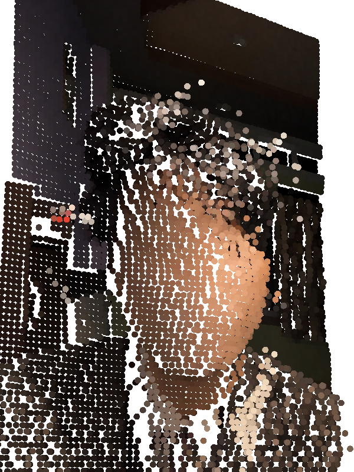
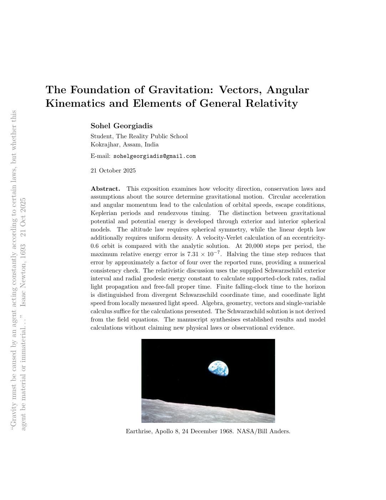
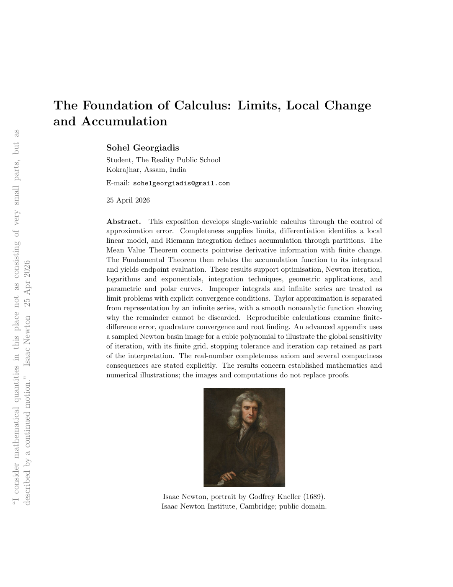
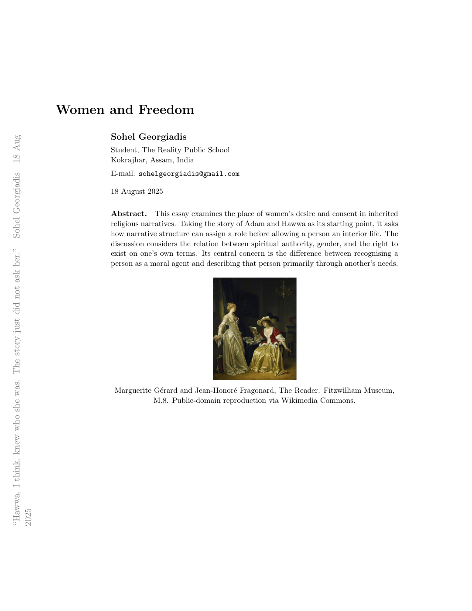
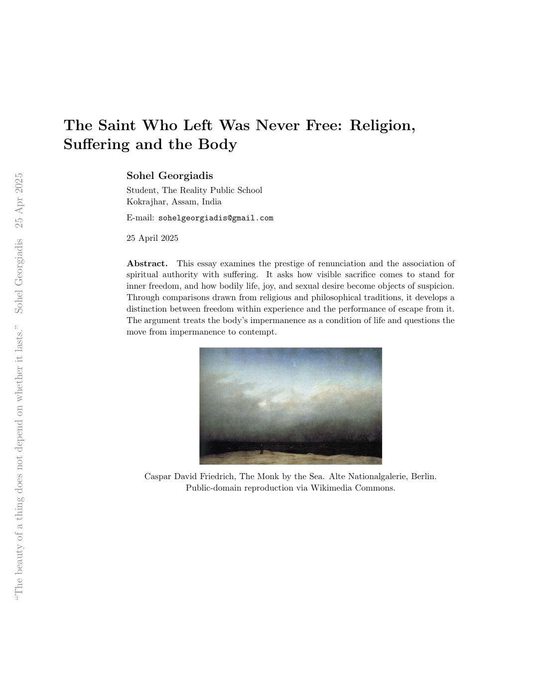
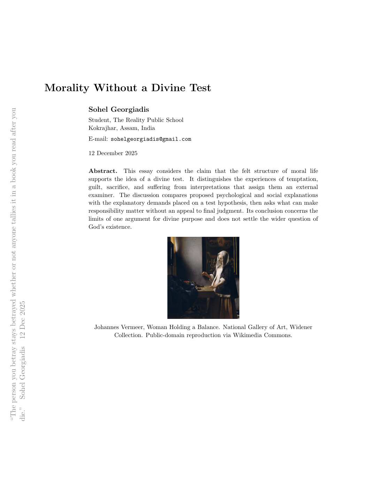
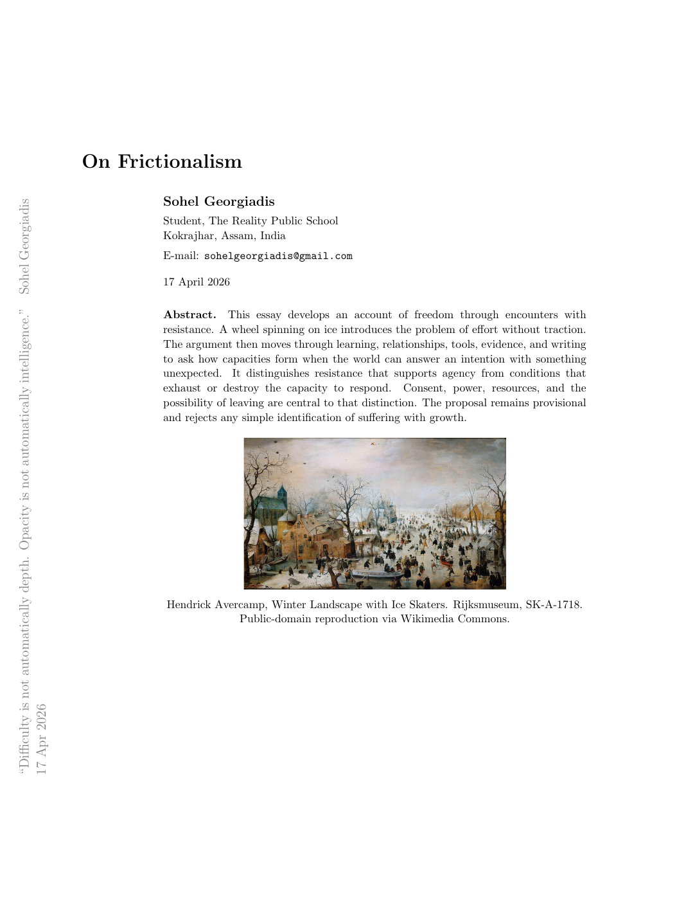
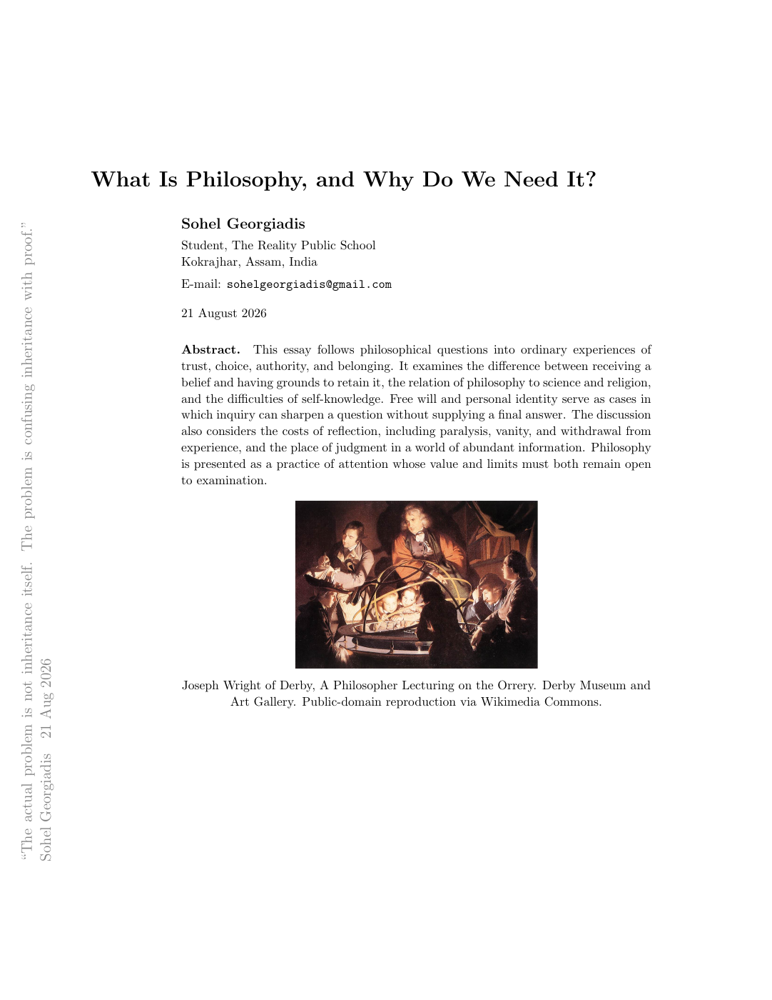
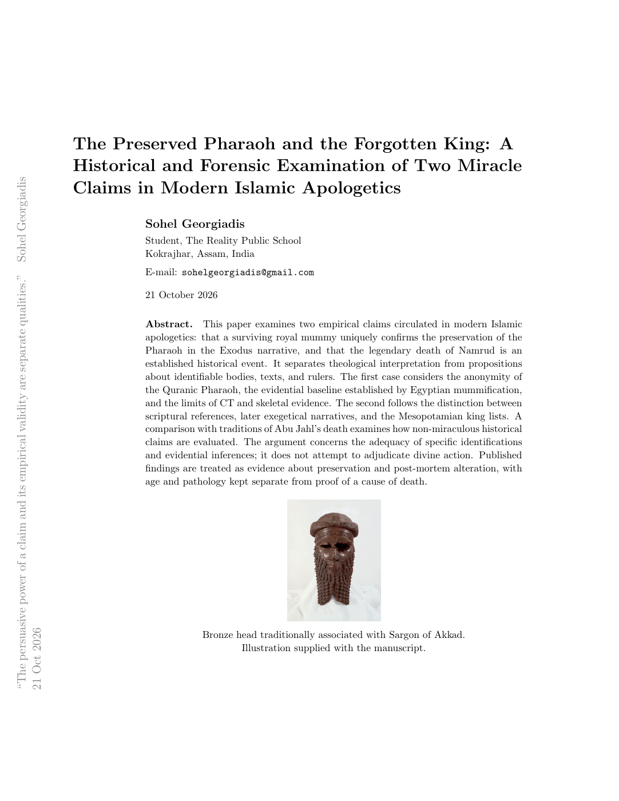

Sohel Georgiadis | |
|---|---|
 | |
| Born | 12 October 2009 |
| Occupation | Student |
| Education | The Reality Public School Kokrajhar, Assam, India |
| Interests | Gravitation, philosophy of religion, sexuality, and human nature |
| Writings | The Foundation of Gravitation The Foundation of Calculus Philosophical essays |
| sohelgeorgiadis@gmail.com | |
Sohel Georgiadis (born 12 October 2009) is a student at The Reality Public School in Kokrajhar, Assam, India. His interests include gravitation and philosophical questions about religion, sexuality, and human nature.[1] He is the author of The Foundation of Gravitation and The Foundation of Calculus, papers on gravitational motion and the mathematical foundations of change.[2][3] His philosophical essays include Women and Freedom and On Frictionalism, which examine consent, agency, and the conditions of freedom.
Early life and education
Georgiadis began coding at fourteen. At fifteen, his attention moved toward science, technology, engineering, and mathematics (STEM).[1]
His interest in physics grew through Interstellar, science documentaries, and recorded university lectures. He continues his school education at The Reality Public School in Kokrajhar.
Interests
Alongside his study of gravitation, Georgiadis writes about freedom, religion, desire, and the conditions under which a person can make a life their own. His philosophical pieces return to consent, inherited belief, moral responsibility, and the place of joy and uncertainty in ordinary experience.
Religion and freedom
In chapters such as The Saint Who Left Was Never Free and Suffering Has Become a Religion, he examines the authority granted to renunciation, sacrifice, and visible suffering. He asks why withdrawal from ordinary life is so often treated as evidence of spiritual depth, and considers the place of laughter, affection, and bodily experience in a spiritual life.[5]
His discussion of religion also makes room for its traditions of argument and reflection. In What Is Philosophy, and Why Do We Need It?, he argues that both faith and doubt deserve examination. An inherited answer can be questioned without assuming in advance where that questioning must lead.[8]
Women, desire, and consent
Women and Freedom approaches the Adam and Hawwa narrative through the question of whose experience the story makes visible. Georgiadis asks what changes when Hawwa is considered through her own perceptions, desires, and consent, and examines the consequences of defining a person through the needs of someone else.[4]
His interest in sexuality includes bodily freedom, shame, and the distinction between care and control. Across these writings, the ability to refuse, disagree, or leave is part of what gives a relationship its meaning. The body is approached as part of lived experience, with desire, vulnerability, and affection belonging to the discussion.
Morality and responsibility
His essay on the idea of life as a divine test separates the experience of guilt and suffering from the explanation given for it. He considers whether responsibility can be understood through trust, harm, and the consequences of actions within this life. Its criticism addresses a particular argument for a divine examiner while leaving the wider question of God's existence open.[6]
Frictionalism
On Frictionalism begins with a wheel spinning on ice while the car remains still. From that image, Georgiadis develops a question about freedom and a world that can resist our intentions. Practice, disagreement, uncertainty, and creative work become ways of considering how judgement and skill take shape through encounters with something outside the self.[7]
The account distinguishes resistance a person can engage with from conditions that damage their ability to respond. Power, resources, consent, and the possibility of leaving matter to that distinction. The essay explicitly resists treating poverty, illness, coercion, or suffering as evidence of personal growth. It also asks when useful assistance begins to take over the judgement it was meant to help develop.
Philosophy and everyday life
What Is Philosophy, and Why Do We Need It? locates philosophical questions in friendship, trust, authority, personal identity, and ordinary decisions. Its concerns include how beliefs are inherited, what a free choice involves, and how technology shapes what receives our attention.[8]
The essay also considers the cost of questioning. Reflection can become a performance, make decisions harder, or interrupt experiences that need to be lived. Georgiadis presents thinking and participation in life as practices that need to make room for each other, with conclusions remaining open to revision.
Writings
The papers below are available in full. Each preview reproduces the first page.

The Foundation of Gravitation
Vectors, Angular Kinematics and Elements of General Relativity
Two bodies can pass through the same position at the same speed and follow different orbits. Their directions of motion distinguish them. The paper begins with vectors and angular motion, then develops gravitational fields, potentials, and orbital mechanics. Its final sections examine clocks, light, and radial free fall in Schwarzschild geometry.

The Foundation of Calculus
Limits, Local Change and Accumulation
A tangent describes a curve near one point. An integral accumulates contributions across an interval. The paper develops the limiting processes that connect these constructions, from completeness and continuity to the Fundamental Theorem of Calculus, Taylor approximation, and infinite series. An appendix treats Newton iteration in the complex plane.

Women and Freedom
Hawwa enters a world whose story has already assigned her a place. The essay asks what that story leaves unheard: her first perception, her desire, and her consent. It examines the consequences of describing a person through another person's need, and asks what an honest telling would have to include.

The Saint Who Left Was Never Free
Religion, Suffering and the Body
Renunciation is often taken as a sign of freedom. Three connected chapters examine the authority of the saint who leaves, the prestige of visible suffering, and the suspicion directed at joy and the body. Their question is what it would mean to become free within a life one still has to live.

Morality Without a Divine Test
Guilt can wake a person at two in the morning. Whether it requires a divine examiner is a further question. The essay holds moral experience and its explanation apart, considering trust, harm, responsibility, and the limits of the argument that life must be a test.

On Frictionalism
A wheel spins on ice, and the car does not move. This small failure opens a question about freedom, effort, and a world that can answer back. The essay follows that question through learning, relationships, tools, evidence, and writing, while keeping the difference between formative resistance and damaging conditions in view.

What Is Philosophy, and Why Do We Need It?
A child asks why the sky is blue and receives a wall instead of an answer. From that interruption, the essay follows philosophy into inherited beliefs, friendship, religion, science, free will, and the mind doing the questioning. It also asks what happens when reflection becomes a way of withdrawing from life.

The Preserved Pharaoh and the Forgotten King
A Historical and Forensic Examination of Two Miracle Claims in Modern Islamic Apologetics
A preserved body can be real while the story attached to it remains unproved. This paper examines the identification of an Exodus Pharaoh, the evidence of Egyptian mummification, and traditions about Namrud. Its concern is what the textual and physical evidence can support, and where an argument begins to ask that evidence to say more than it does.
References
- Biographical information supplied by Sohel Georgiadis.
- Georgiadis, Sohel. The Foundation of Gravitation: Vectors, Angular Kinematics and Elements of General Relativity.
- Georgiadis, Sohel. The Foundation of Calculus: Limits, Local Change and Accumulation.
- Georgiadis, Sohel. Women and Freedom.
- Georgiadis, Sohel. The Saint Who Left Was Never Free: Religion, Suffering and the Body.
- Georgiadis, Sohel. Morality Without a Divine Test.
- Georgiadis, Sohel. On Frictionalism.
- Georgiadis, Sohel. What Is Philosophy, and Why Do We Need It?
- Georgiadis, Sohel. The Preserved Pharaoh and the Forgotten King: A Historical and Forensic Examination of Two Miracle Claims in Modern Islamic Apologetics.